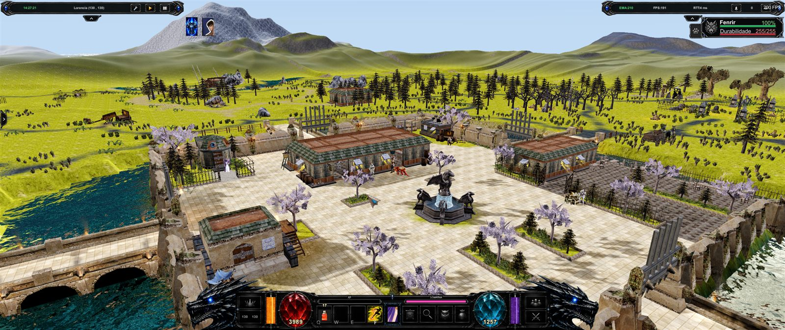
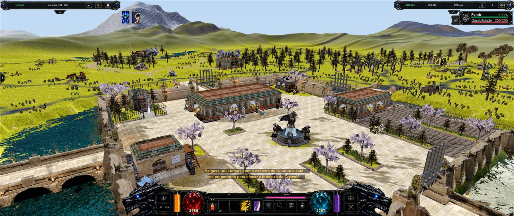
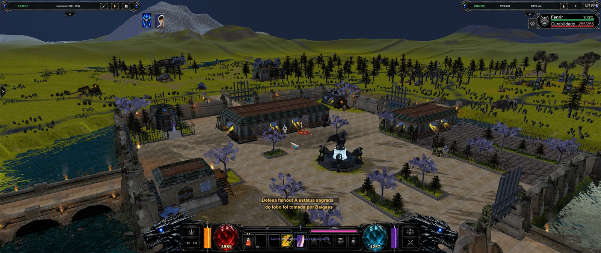
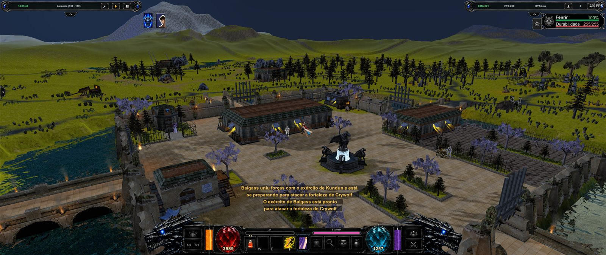
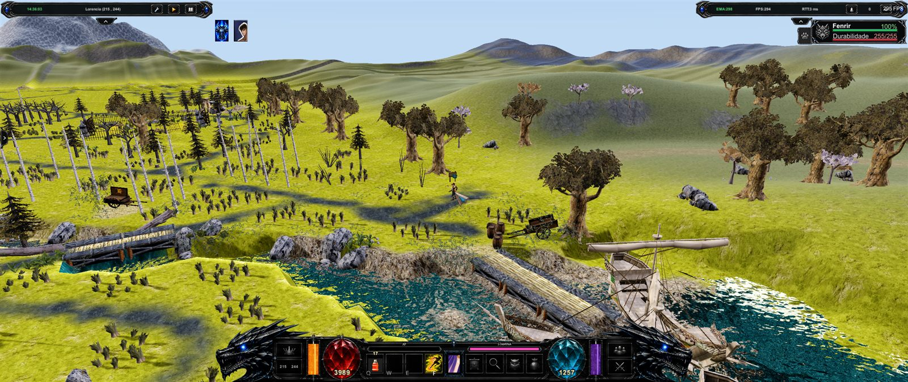
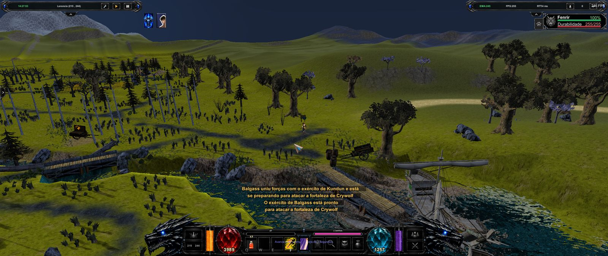
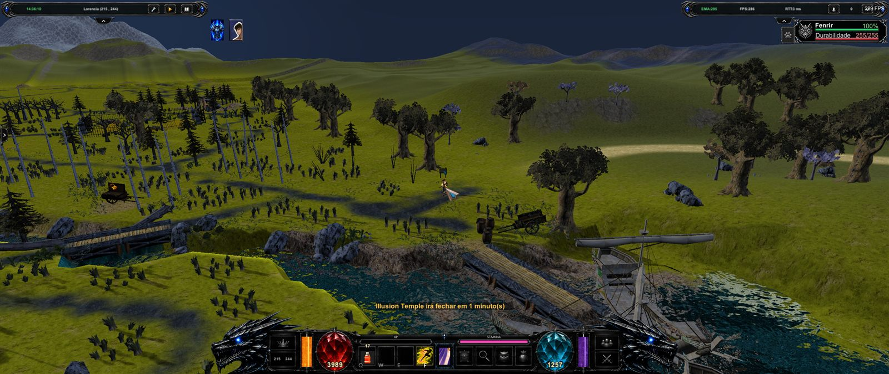
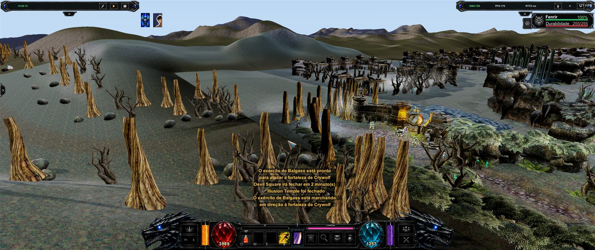
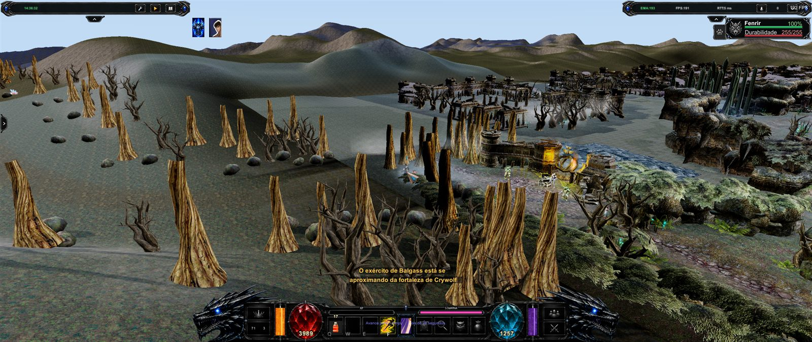

Versões leves de objetos distantes: antes × depois
Build r1096, mesmo ponto, mesma câmera e mesma hora. "Depois" = as 4 opções ligadas (LOD, oclusão, agrupamento do horizonte e luzes distantes baratas). Hoje estão DESLIGADAS: você aprova e eu ligo como padrão.
| Lugar | FPS antes | FPS depois | Ganho |
|---|---|---|---|
| Lorencia centro, dia | 203 | 229 | +13% |
| Lorencia centro, noite | 204 | 231 | +13% |
| Lorencia borda, dia | 258 | 292 | +13% |
| Lorencia borda, noite | 253 | 284 | +12% |
| Aida, dia | 175 | ver relatório | LOD +5%, luzes +6% |
Ganho de cada opção sozinha em Lorencia: LOD +6 a +10%, luzes distantes +5 a +12%, agrupamento +5 a +8%, oclusão +1 a +5%.
centro-dia


centro-noite


borda-dia

borda-noite


aida-dia

